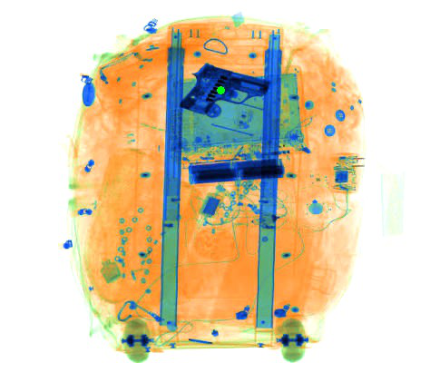
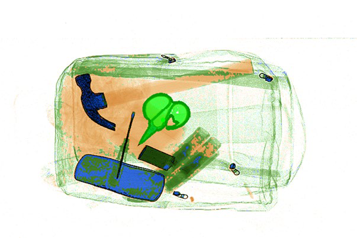

Discover the objects

→Saliency-guided mining turns unlabeled scans into an object bank.
Cleaner boundaries and more complete instances, even under heavy overlap.
Stronger box localization than SAM2, SAM3, and UnSAMv2 across all six test-only datasets.
Unlabeled scans become a world of structured training examples.

→Saliency-guided mining turns unlabeled scans into an object bank.
Combine dual-energy scans in the Beer–Lambert absorbance domain.
From sparse scenes to heavy overlap.

Use a point and granularity to localize a part or a complete instance.
@inproceedings{cai2026laox,
title = {Localize Any Object in {X-Ray} Security Scans without Human Annotation},
author = {Cai, Yaqi and Liu, Mingxuan and Vaquero, Lorenzo and Wang, Ning and Pu, Nan and Xue, Feng and Ricci, Elisa and Sebe, Nicu},
booktitle = {Advances in Neural Information Processing Systems},
year = {2026}
}